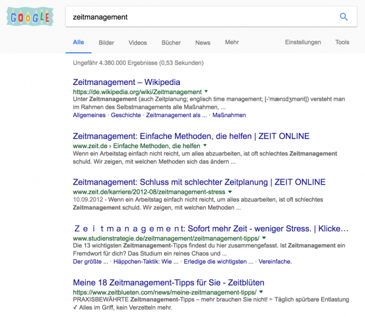
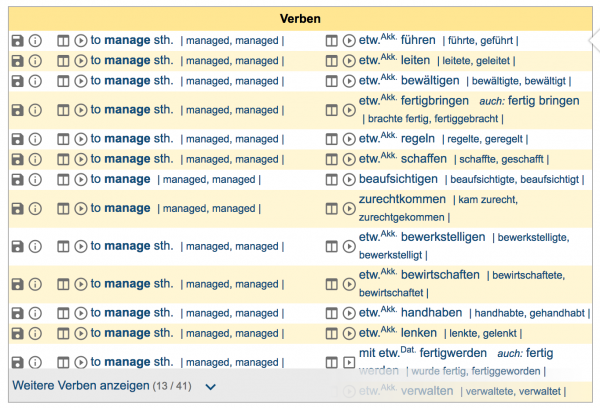
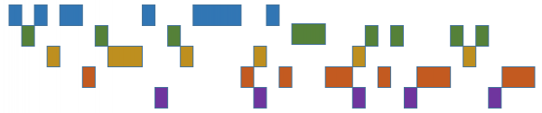

Attention Design ist das neue Zeitmanagement
Wer würde nicht gern mehr Zeit für „das Wesentliche“ haben? In Bezug auf die Zeit scheinen viele Menschen in stetem Mangel zu sein. Nicht umsonst habe ich meine kleine Firma bei Gründung „Zeitgewinn Hamburg“ genannt. Mit der Methode Attention Design möchte ich Sie dabei unterstützen, sich mehr dem für Sie Wesentlichen zu widmen. Was läge also näher, als Ihre Kompetenz zum Zeitmanagement zu stärken? Viele Millionen Beiträge im Internet rund um das Stichwort legen nahe, dass es beim Zeitmanagement Land auf, Land ab hapert:

Bis jetzt habe ich auch so gedacht und Zeitmanagement-Trainings angeboten bzw. Techniken daraus gleich in meine sonstige Arbeit rund um die Digitalisierung einfließen lassen. „Besser werden beim Zeitmanagement“ klingt einfach naheliegend und verlockend.
Durch die Lektüre eines Artikels von Produktivitätsexperte Tiago Forte habe ich meine Meinung jedoch nun geändert. Auch wenn er es nicht explizit so darstellt, ist für mich klar geworden: Zeitmanagement ist eine Illusion und Attention Design die Wirklichkeit. Zeit kann nicht gemanagt werden. Im einfachsten Fall ist die Idee von Zeitmanagement ein Missverständnis, ein Irrtum – im schlimmsten pure Hybris.
Eigentlich liegt das auch auf der Hand: Das Verstreichen der Zeit ist außerhalb unserer Kontrolle. Sie fließt völlig unabhängig und stetig. Wir können die Zeit nicht anhalten oder beschleunigen. Was gibt es da zu managen? Wir werden geboren und unserer Lebensuhr beginnt zu ticken. Ihre Zeiger wandern unaufhörlich und erbarmungslos im Rund bis zu unserem Tode.
Vielleicht wollte Goethe auch das seinen Faust ausdrücken lassen?
Werd ich zum Augenblicke sagen: / Verweile doch! du bist so schön! / Dann magst du mich in Fesseln schlagen, / Dann will ich gern zugrunde gehn!
Faust I, Johann Wolfgang von Goethe
Denn an der Zeit, an ihren Augenblicken, da gibt es nichts festzuhalten. Sie verweilen nie. Ihre Natur ist das Forteilen. Ständig ist die Zeit in Bewegung: nach vorne, in Richtung Zukunft.
Was und wie das managen? Es ist unmöglich!
Die Zeit ist ein Fluss, auf dem wir von der Lebensquelle zur Mündung getragen werden. Unweigerlich.

(Bildquelle: Pixabay)
Wer ein Boot steuern will, der macht einen Segelschein oder einen Motorbootführerschein oder ein Kajak-Training. Aber haben Sie schon von einem „Gewässermanagement“-Kurs oder „Flussmanagement“-Schein gehört? Auch „Windmanagement“ wird nicht für Windsurfer unterrichtet, ebenfalls gibt es kein „Luftmanagement“ für Paraglider oder Fallschirmspringer.
Das Medium, in dem oder mittels dessen wir uns fortbewegen wollen, steht nicht zu managen. Es ist so, wie es ist. Wir kontrollieren weder Meer, Fluss, Wind, noch Luft.
Bei gegebenen unabhängigen Medien können wir jedoch lernen, mit ihrer unkontrollierten Entwicklung umzugehen. Genauso, wie wir lernen können, mit den Kräften Gravitation und Fliehkraft „zu spielen“.
(Bildquelle: Gravity Glue)
Nur bei der Zeit haben wir das bisher nicht erkannt. Warum? Das ist merkwürdig, oder? Dabei ist die Zeit das ultimativ unkontrollierbare Medium: sie ist nicht einmal greifbar wie Wasser und verändert auch nicht ihre „Qualität“.
Wind kann sich ganz objektiv von einem lauen Lüftchen zu einem Sturm wenden. Wasser kann ganz handfest von einem ruhigen Fluss zu einem wirbelnden Gewässer aufschäumen. Doch Zeit vergeht stets gleich.
Das Ticken einer Uhr ist unabhängig von allen Ereignissen und überall gleich. (Da wir es im Alltag nicht mit relativistischen Effekten der Physik zu tun haben, sehe ich davon hier ab.) Einzig unsere Wahrnehmung der Zeit ändert sich. Wenn Zeit unterschiedliche Qualität zu haben scheint, dann ist das lediglich in uns. Tempus fugit ist keine Aussage über die Zeit, sondern über unser Erleben.
Deshalb: Es gibt an der Zeit nichts zu managen. Der Begriff Zeitmanagement macht keinen Sinn.
Das zu erkennen, halte ich für fundamental, bevor etwas besser werden kann mit dem, was das bisherige Zeitmanagement adressiert. Metaphern helfen uns zu verstehen, wenn sie gut gewählt sind. Genauso behindern sie uns aber auch, wenn sie nicht gut gewählt sind.
Die Metapher vom Gehirn als Computer ist eine behindernde Metapher. Solange man ihr anhängt und sein Handeln daran ausrichtet, muss es schwer fallen, einen guten Universitätsabschluss zu erreichen oder die Beziehung mit einem anderen Menschen zu gestalten.
Genauso die Metapher von der Zeit, die uns suggeriert, Zeit sei eine Ressource, die gemanaget werden könnte.
Sehen Sie selbst, was „managen“ in der Sprache bedeutet, aus dem das Deutsche es übernommen hat:

(Quelle: dict.leo.org)
An der Zeit gibt es nichts zu führen oder zu regeln oder zu lenken. Ja, wir können mit ihr zurechtkommen, doch das klingt so passiv und erleidend, dass es nicht vom Begriff Zeitmanagement gemeint sein kann.
Zeitmanagement ist also eine Illusion, der ich nicht länger anhängen will. Der Begriff ist tief eingegraben auch in meinem Sprachgebrauch. Doch ist werde mich bemühen, ihn nicht mehr zu verwenden. Oder wenn, dann nur als Ausgangspunkt und um gelegentlich anschlussfähig zu sein.
Was aber stattdessen? Wo Zeitmanagement drauf steht, soll ja ein Problem adressiert werden, dass durch Aufgabe des Begriffes nicht verschwindet.
Wenn Zeit nicht in die Hand genommen werden kann, um sie zu führen/regeln/lenken, was dann?
„It’s the attention, stupid!“ möchte ich ausrufen. Das, was wir in der Hand haben, ist unsere Aufmerksamkeit. Sie ist womöglich sogar das Einzige, was wir überhaupt wirklich managen können. Denn was sind wir, wenn nicht Aufmerksamkeit. Wir nähern uns schon dem, was Attention Design bedeutet.
Wir haben Wissen, wir haben Kraft, wir haben Ausdauer, wir haben Geld, ja sogar: wir haben Zeit.
Doch wir sind aufmerksam. Oder wir sind müde und deshalb eben nicht mehr so aufmerksam, wie wir sein könnten.
Die Formulierung, „Ich habe Aufmerksamkeit“ kennt die deutsche Sprache nicht in Bezug auf ein eigenes Vermögen. „Ich habe Aufmerksamkeit“ bedeutet, dass andere aufmerksam sind. Deren Aufmerksamkeit ist auf uns gerichtet.
Wenn Sie denken „Ich habe zu wenig Zeit für…“ dann meinen Sie eigentlich „Meine Aufmerksamkeit ist weniger auf … gerichtet, als ich möchte.“
Die Zeit können Sie nicht managen, aber Sie können Ihre Aufmerksamkeit gestalten. Ihre Aufmerksamkeit kann unterschiedliche Formen haben. Ihre Aufmerksamkeit kann unterschiedliche Intensität haben.
Aufmerksamkeit kann so aussehen:
oder so:

Das ist ein Unterschied, oder?
Wir sind ständig aufmerksam. Ob unsere Aufmerksamkeit allerdings auf das gerichtet ist, wo wir sie wünschen, ist eine andere Sache.
Wenn Sie den Eindruck haben, nicht das zu tun, was Sie wollen und schon gar nicht zu schaffen, was Sie sich vorgenommen haben, dann hat das nichts mit mangelhaftem Zeitmanagement zu tun. Sie gestalten schlicht Ihre Aufmerksamkeit suboptimal.
Nicht die Zeit gilt es zu managen, sondern unsere Aufmerksamkeit zu formen. Attention Design ist die Zukunft des Zeitmanagement.
Man könnte fast sagen, dass chronischer Zeitmangel eine Form von ADS (Aufmerksamkeitsdefizitsyndrom) ist.
Wenn es Ihnen an Kraft oder Ausdauer mangelt, dann arbeiten Sie im Fitnessstudio daran, den Mangel auszugleichen. Sie formen Ihre Muskeln.
Dasselbe ist zu tun, wenn es Ihnen schwer fällt, aufmerksam zu sein auf das, wo Sie aufmerksam sein wollen. Sie müssen Ihre Aufmerksamkeit trainieren. Die lässt sich formen und die lässt sich mit Hilfsmitteln unterstützen. Techniken und Tools verstärken nicht nur unsere Kraft, sondern auch die Aufmerksamkeit.
Darauf werde ich zukünftig meine Aufmerksamkeit richten. Wie kann ich Sie dabei unterstützen, aufmerksam auf das zu sein, was Sie wirklich wollen?
Die erste Frage dabei: Was lohnt überhaupt Ihrer Aufmerksamkeit?
Die zweite Frage: Wenn es mehrere lohnende Ziele für Ihre Aufmerksamkeit gibt, wie formen Sie dann am besten Ihre Aufmerksamkeit, um sie zu erreichen?
Die dritte Frage: Wie vermeiden Sie, dass Ihre Aufmerksamkeit abschweift?
Ich ahne, dass der Perspektivwechsel von Zeit(management) zu Aufmerksamkeit(sgestaltung) auch mich noch ein wenig Umgewöhnungsmühe kosten wird. Doch das scheint mir mehr als lohnend. Attention Design ist als Bild viel stimmiger, nun da ich es einmal gesehen habe.
Weitere Artikel

Veränderung braucht Gewohnheit
Sowohl im Berufs-als auch im Privatleben sind wir ständig im Veränderungsmodus. Manche Veränderungen wollen wir umsetzen, manche müssen wir mitmachen. Wir alles wissen, dass Veränderung nie leicht sind und je länger wir etwas auf …

Puffer sichern Flow
Es wird allerhöchste Zeit, sich von der Idee, dass nur wer am Limit arbeitet, effizient sei, zu verabschieden. Unter Volllast, ganz ohne Puffer zu arbeiten ist eine „gute“ Voraussetzung für Unzuverlässigkeit, Fehler …